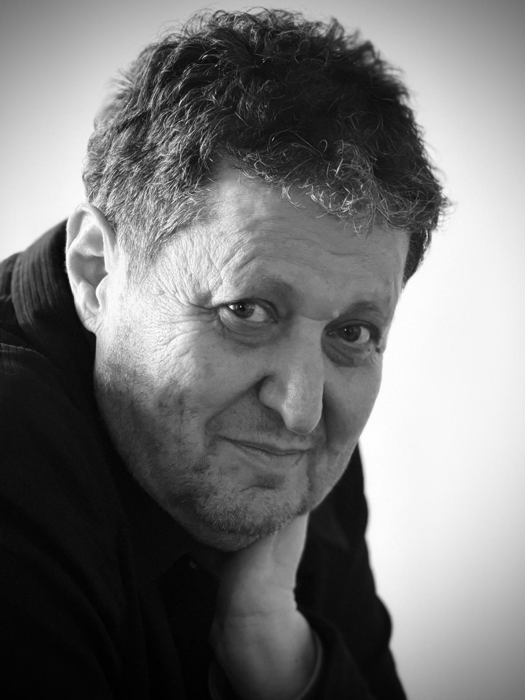

Venice Biennale 2026 participation.
Venice Biennale 2026
Belu-Simion Fainaru
Artist, curator, and educator. This page stays intentionally short. For full biography, press materials, and updated details, use the PR Assistant.

Represented Romania at Venice Biennale 2019.
Recognized in a major international exhibition.
Works through sculpture, installation, and social dialogue.
Page and PR assistant by boazkaizman.com